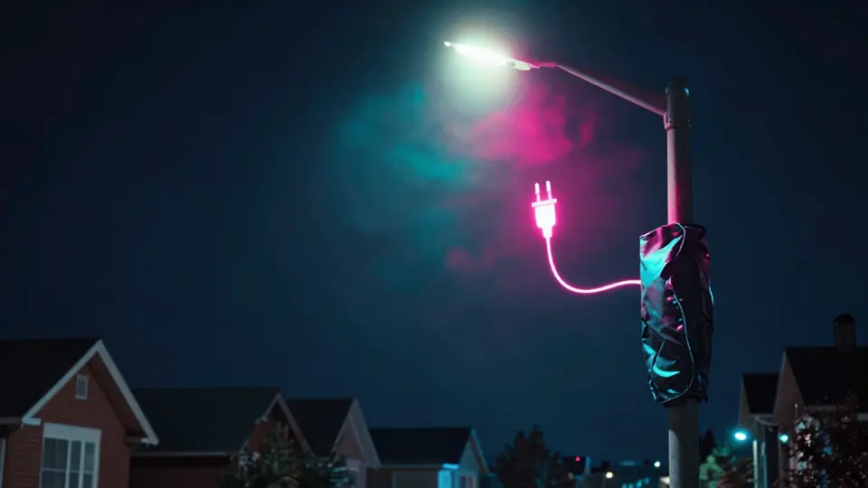

Policing & Investigations All coverage filed under Policing & Investigations.
County commissioners passed the item on Nov. 3, 2026. The county record describes a platform to analyze data for contraband mitigation, crime reduction and investigations. It is an application, not an award, and no vendor is named.
November 21, 2026 One hundred officers can check a photo against the force's custody images; the UK biometrics commissioner says national oversight plans still lack detail.
November 21, 2026 The force also says officers stopped people who were not on the watchlist because they avoided the vehicle.
November 21, 2026 Police say access needs prior authorisation and is logged; the system's stated purposes include national security.
November 21, 2026 Privacy and criminology experts told CBC there is no way to check the likenesses or count false leads.
November 21, 2026 The Department of Investigation's inspector general says the NYPD largely complies with the POST Act, but one internal log showed about a third of face searches marked "no" for supervisor review.
November 20, 2026 An Arizona judge released a DUI suspect because an AI tool helped write the arrest report. A Kentucky federal judge let a wrongful-arrest suit over a face match proceed. Fargo says its officers broke no law.
November 19, 2026 From the archive (Nov 12, 2026): Forces make more than 300,000 search requests a year; the report sets 16 recommendations.
November 20, 2026 From the archive (Oct 30, 2026): Suffolk planned deployments in three towns with equipment borrowed from Bedfordshire Police.
November 20, 2026 From the archive (Oct 23, 2026): Facial-recognition lookups in the TAJ database rose from about 375,000 in 2019 to about one million in 2024.
November 20, 2026 From the archive (Oct 22, 2026): They include provincial legislation, risk assessments for police AI and resources for accused people to respond when AI is used.
November 20, 2026 From the archive (Oct 22, 2026): Wallace's police chief defended the readers; the sheriff's office cited the controversy.
November 21, 2026 From the archive (Oct 21, 2026): The city's Independent Policing Auditor post has been vacant since Oct. 3.
November 20, 2026 From the archive (Oct 21, 2026): An alderman wanted information on false alarms and sensor placement before the three-year purchase.
November 21, 2026 From the archive (Oct 20, 2026): He faces five felony counts of official misconduct; a department-wide database audit is underway.
November 20, 2026 From the archive (Oct 19, 2026): An internal audit at the Vidalia Police Department led to two counts of misuse of a license plate reader system.
November 20, 2026 From the archive (Oct 16, 2026): Police check 30 random Flock searches at a time. Commissioners wanted a larger sample; the department cited staffing.
November 20, 2026 From the archive (Oct 16, 2026): The chief offered a 14-day data retention trial; opponents said a new vendor doesn't answer their concerns.
November 21, 2026 From the archive (Oct 15, 2026): DHS agreed with six of seven GAO recommendations. ICE had issued no reprimands for camera-policy violations.
November 20, 2026 From the archive (Oct 14, 2026): Kolhapur police say thefts dropped; the report notes an alert alone doesn't show anyone committed a crime.
November 20, 2026 From the archive (Oct 14, 2026): The Guardian reviewed 80+ law enforcement documents; they also show monitoring of online opposition to data centers.
November 20, 2026 From the archive (Oct 13, 2026): The department calls it an exploration phase; it barred non-approved AI report tools in December.
November 20, 2026 From the archive (Oct 13, 2026): Projects include exploring AI to prepare and quality-check evidence case files.
November 20, 2026 From the archive (Oct 15, 2026): The police chief and mayor still support the network, which faces an ACLU lawsuit.
November 20, 2026 
From the archive (Oct 11, 2026): Officials say Flock couldn't provide the safeguard assurances the city wanted.
November 20, 2026 From the archive (Oct 11, 2026): Columbia County's sheriff spent $97,129.58 of a state grant on 10 cameras, the Daily Gazette reports.
November 20, 2026 From the archive (Oct 9, 2026): Records obtained through FOIA don't show the voter data entered Palantir's ELITE system; Palantir says it never did.
November 20, 2026 From the archive (Oct 7, 2026): The office says it doesn't plan to install another plate-reader system.
November 20, 2026 From the archive (Oct 5, 2026): The police chief cited problems with the vendor, not the cameras' effectiveness.
November 20, 2026 From the archive (Oct 2, 2026): The one study cited found an 11% drop in car thefts across 216 agencies; it isn't peer-reviewed and didn't examine break-ins.
November 20, 2026 From the archive (Oct 2, 2026): A 2026 law already caps police retention of plate-reader data at 30 days.
November 20, 2026 From the archive (Oct 1, 2026): Audits used to happen every 90 days; each search now needs a reason and a case number, the sheriff said.
November 20, 2026 From the archive (Oct 1, 2026): The officer was fired after a yearlong investigation; the city runs 474 cameras.
November 20, 2026 From the archive (Sep 29, 2026): Two federal agencies had access to the town's data as of March, according to records cited by INDY Week.
November 20, 2026 From the archive (Sep 28, 2026): The police chief says a new policy may not be ready until early 2027.
November 20, 2026 From the archive (Sep 24, 2026): A Sept. 18 request for information covers ERO headquarters, all 24 field areas and three targeting centers.
November 20, 2026 From the archive (Sep 22, 2026): Every false match in the trial misidentified a person with darker skin, the report says. Police say an officer confirms each match.
November 20, 2026 From the archive (Sep 16, 2026): The Council on Criminal Justice's AI task force applied its decision framework to three real-world tool categories.
November 20, 2026 From the archive (Aug 18, 2026): An internal report found the Crime Anticipation System correctly predicted one of 50 Amsterdam incidents.
November 20, 2026 From the archive (Jun 25, 2026): Of 13 agencies that answered records requests, two had the hotlist enabled.
November 21, 2026